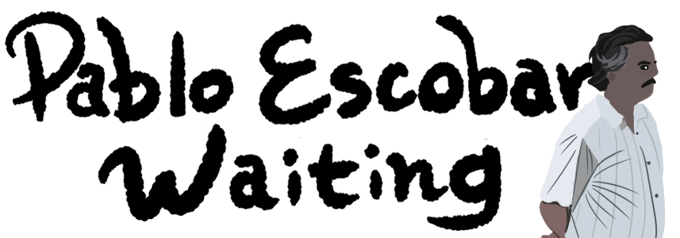

總有些時刻我們會像Escobar一樣，忍不住思考人生的意義。
起源
影集的迷因數不勝數，但我們可以在這個迷因中感覺到時代的變化——也就是Netflix的崛起。這張通常被當作Reaction pics的「Sad Pablo Escobar」或「Pablo Escobar Waiting」出自Netflix熱門影集《毒梟》（Narcos）在2016年的第二季。
改編哥倫比亞傳奇毒梟Pablo Escobar的真實故事，《毒梟》緊張刺激又充滿張力，與緝毒探員間的交鋒也是一大看點，是實實在在的暴力犯罪影集。第一季描繪Escobar如何成立惡名昭彰的麥德林集團，順而建立了古柯鹼帝國掌權又致富。
然而到了第二季，由Pablo Escobar逃獄開始，描寫的是毒品帝國衰敗和Pablo Escobar的殞落，看完叫人忍不住為這位反英雄感嘆噓唏。為演Pablo Escobar而特地增重的Wagner Moura被評價為演技精湛，將大毒梟的落寞惆悵詮釋得極其到位。
散佈
2016年10月，由不知名網友將三張Netflix釋出的劇照合為單張，在接下來的一兩年內，於Reddit版上或有零星流傳，有時被解釋為悲傷、有時是無聊、有時是窮極無聊得悲傷。
昆汀塔倫提諾鑑賞公寓版
要論表達無聊的Reaction pics應該都大同小異，只是這異常寫實的情境讓人想起2019年的昆汀塔倫提諾走走晃晃(?)模板。導演在一次拜訪俄羅斯克里姆林宮時的跟拍照片，被PS進幾張有著俄羅斯家飾的公寓裡，毫無微和感，不變的都是那同Pablo Escobar一樣被放置Play的無奈。